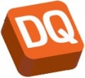

Previous projects and clients
LegalThings is an application aimed at digitializing paper intensive industries like lawyer firms, accounting firms and HR departments. With LegalThings you can control the full document life cycle online; purchasing legal templates, creating documents, collaboration, reviewing, signing and storage.
Cloud9 is a full featured IDE that runs in the browser. It enables developers to get started with coding immediately with pre-configured workspaces, collaborate with their peers with collaborative coding features, and web development features like live preview and browser compatibility testing. Cloud9 has been aquired by AWS.
Plinkr helps counselors, consultants and municipalities to get the home administration in order together with the client. The site also provides price comparisons between service providers, notifying the client and/or care providers when it's possible to switch.
Colophon is a publicationplatform for creating online reports, targeting governments and institutes. The platform provides an intuative UI for creating rich and interactive reports. The reports are publishes as static HTML.
MyRadio was an interactive internet radio, owned by Netherlands largest radio company Sky Radio Group. MyRadio offered 30 stations, each carefully created by music directors and personlised by users via likes and dislikes. MyRadio has been aquired by a third party and discontinued as standalone application.
Fiestainfo is a party calender and site for party pictures, catering to the Dutch club scene. The website features social networking, geo-positioning and advanced access control.
 10.000scholen.nl provides detailed information about all primary and secondary schools in the Netherlands. This includesstatistical data like the performance of the school, age and gender of the teacher and education level of the parents.
10.000scholen.nl provides detailed information about all primary and secondary schools in the Netherlands. This includesstatistical data like the performance of the school, age and gender of the teacher and education level of the parents.
Saleduck is the company behind the popular coupon sites Saleduck and Solden, as well as other websites like Gerust.nl, Gratis op te halen en Kamers in Nederland.
Firm24 provides online corporate services for a highly compative price. It can do so by automating it’s services, including starting a company, maintaining a company and generating documents.
Talpa Radio is the biggest and most important music entertainment company of the Netherlands. Radio stations 538, Radio 10, Sky Radio and Radio Veronica reach over 7 million listerners every week.
PeerReach analyses twitter users and tweets to find out who's influential in a specific field of expertise. PeerReach isn't interested in the the number of followers, but looks at the quality of followers. It also takes demographics, interaction and awareness into account.
 ChartLeaders was the website around the developing stages theory by Marc van der Erve. The website helped to popularize and spread the theory by gathering information about public figures and organizations through several web APIs and combining these with information provided by an analyst to create a report.
ChartLeaders was the website around the developing stages theory by Marc van der Erve. The website helped to popularize and spread the theory by gathering information about public figures and organizations through several web APIs and combining these with information provided by an analyst to create a report.

DQ Webshops runs several large Magento webshops around Europe, selling wall brackets and mounting systems for LCD, Plasma and LED TVs.
Helder Hosting was a Dutch hosting company aimed to provide a solid and affordable service to novice website owners. Helder Hosting has been aquired by VIP internet.